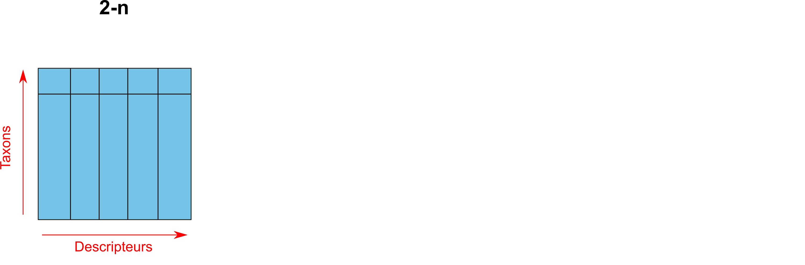
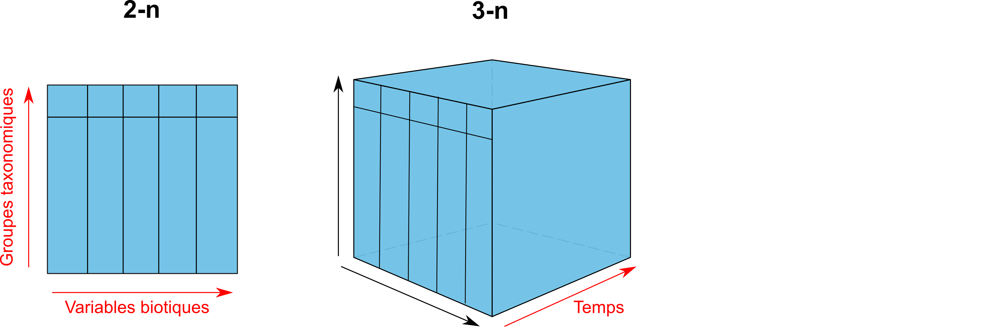
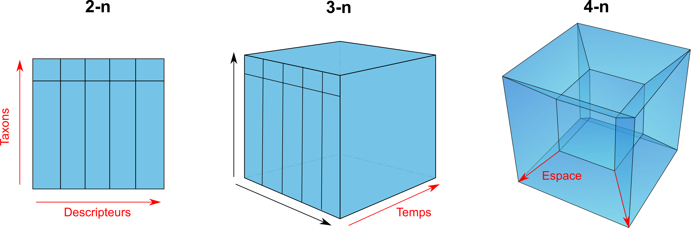
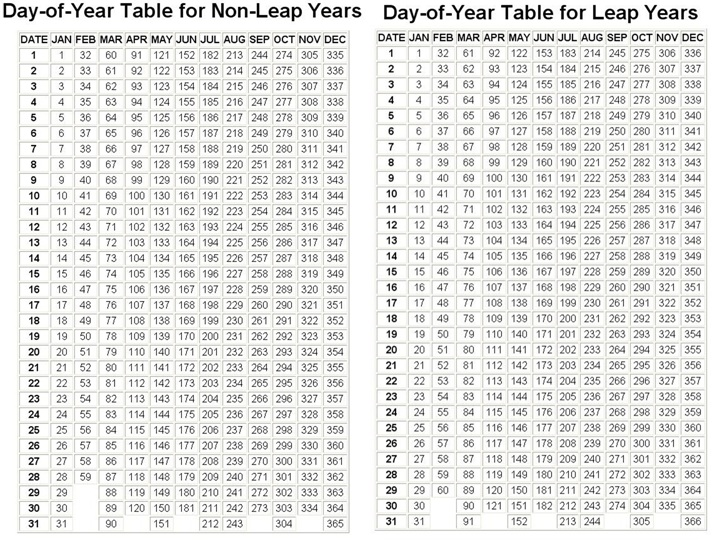
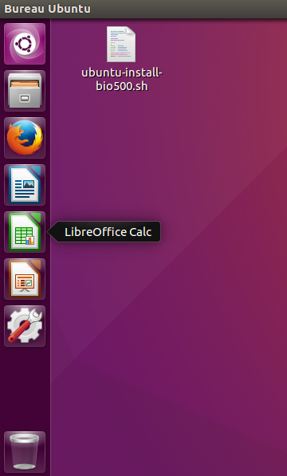
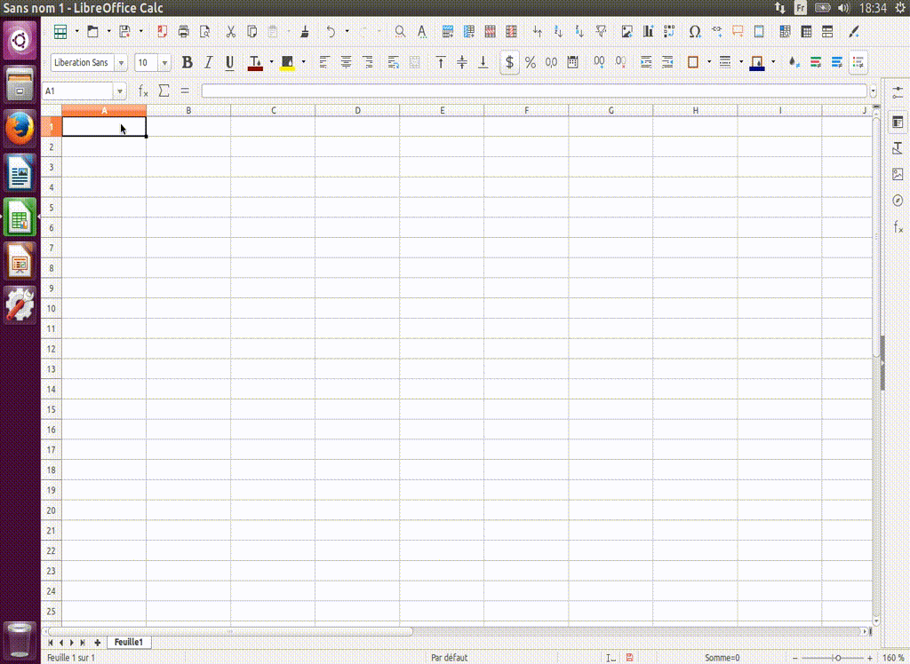

- Ces diapositives sont disponibles en version web et en PDF.
- L'ensemble du matériel de cours est disponible sur la page du portail moodle.
Séance 2: La collecte de données
BIO 500 - Méthodes en écologie computationnelle
Dominique Gravel
Laboratoire d'écologie intégrative
Séance 2
Projet de session
Rappel du problème
Est-ce que le réseau de collaboration entre les étudiants est différent des réseaux écologiques ?
Rappel du problème
Est-ce que l'on parvient à expliquer une collaboraiton à partir de caractéristiques des noeuds ?
Pour commencer
En équipe de 4, on vous demande de commencer à planifier une campagne de collecte de données. Commencez par discuter des types de données que vous souhaitez récolter, faites la liste des informations nécessaires pour répondre à la question. Ensuite, établissez un protocole afin de récolter ces données.
Les données en biologie
La collecte de données

La collecte de données
En biométrie, il existe plusieurs grandes familles de données:
- Quantitative (variables continues)
- Semi-quantitative (variables discrètes)
- Qualitatives (variables de rang)
Le type de données collectées conditionne les analyses statistiques que l'on pourra réaliser sur les données.
La collecte de données en biologie
Alors, qu'en est-il d'une donnée biologique ?

La collecte de données en biologie
Le problème de multidimensionnalité

La collecte de données en biologie
Le problème de multidimensionnalité

Note: Pour la prise de données de facteurs environnementaux (abiotiques), on retrouverait une forme de type 3n.
La collecte de données en biologie
En biologie, on classifie les données selon 4 dimensions/classes d'information:
- Biotique/abiotique
- Taxonomique
- Temporelle
- Spatial
Au sein de ce cours, nous nous attarderons à la façon de structurer ses données. Les spécificités propres à chacune de ces dimensions seront présentées. D'abord le format des données, puis les types de données.
Le format des données
Le format des données
Format large
| ID | esp | 2010 | 2011 | 2014 |
|---|---|---|---|---|
| 567-1 | acsa | 460 | NA | NA |
| 567-2 | acsa | 100 | NA | NA |
| 567-3 | acsa | 120 | NA | NA |
| 598 | piru | NA | 380 | NA |
| 876 | abba | NA | NA | 160 |
- Privilégier le format long
- Une ligne = une observation
Format long
| ID | esp | annees | dhp_mm |
|---|---|---|---|
| 567-1 | acsa | 2010 | 460 |
| 567-2 | acsa | 2010 | 100 |
| 567-3 | acsa | 2010 | 120 |
| 598 | piru | 2011 | 380 |
| 876 | abba | 2014 | 160 |
- Nom de colonnes court, sans accent, sans espace et explicite.
- Si possible, attachez les unités au nom de la colonne.
Le format des données: tableaux
Garder l'approche un tableau doit contenir un type d'information:
| ID_plot | ID_arbre | ID_multi | esp | annees | dhp_mm |
|---|---|---|---|---|---|
| A | 567 | 1 | acsa | 2010 | 460 |
| A | 567 | 2 | acsa | 2010 | 100 |
| A | 567 | 3 | acsa | 2010 | 120 |
| B | 598 | NA | piru | 2011 | 380 |
| B | 876 | NA | abba | 2014 | 160 |
| ID_plot | annees | variable | valeur |
|---|---|---|---|
| A | 2010 | pp_tot_mm | 880 |
| B | 2011 | pp_tot_mm | 560 |
| B | 2014 | pp_tot_mm | 900 |
| A | 2010 | temp_max_deg | 24 |
| B | 2011 | temp_max_deg | 26 |
| B | 2014 | temp_max_deg | 28 |
- Si l'on veut ajouter des données sur le climat, on ouvrira un nouveau tableau.
Le format des données: colonnes
Ne pas agréger l'information dans une seule colonne
| ID_arbre | esp | annees | dhp_mm |
|---|---|---|---|
| 567-1 | acsa | 2010 | 460 |
| 567-2 | acsa | 2010 | 100 |
| 567-3 | acsa | 2010 | 120 |
| 598 | piru | 2011 | 380 |
| 876 | abba | 2014 | 160 |
- Une colonne = une information
| ID_arbre | ID_multi | esp | annees | dhp_mm |
|---|---|---|---|---|
| 567 | 1 | acsa | 2010 | 460 |
| 567 | 2 | acsa | 2010 | 100 |
| 567 | 3 | acsa | 2010 | 120 |
| 598 | NA | piru | 2011 | 380 |
| 876 | NA | abba | 2014 | 160 |
Le format des données: colonnes
Important: votre fichier de données brutes (destiné au stockage à long terme) ne doit pas contenir de champ calculé (c.a.d. une nouvelle colonne avec une moyenne, etc..)
Les types de données
Les données biotiques et abiotiques
En informatique, on distingue plusieurs types de données:
| Appelation | Type | Valeurs | Taille |
|---|---|---|---|
BOLEAN |
Boléen | vrai/faux | 1 octet |
INTEGER |
Entiers | -998, 123 | 1 à 4 octets |
DOUBLE, FLOAT |
Nombres réels | 9.98, -4.34 | 4 à 8 octets |
CHAR,VARCHAR |
Chaine de caractères | lapin | n x 1 à 8 octets |
TIMESTAMP,DATE,TIME |
Dates et heures | 1998-02-16 | 4 à 8 octets |
- Ce sont ces types qui seront utilisés pour entreposer nos données biotiques et abiotiques.
- Le choix d'un type approprié permet de réduire la taille du fichier de données.
Les données temporelles
La plupart des languages/programmes disposent d'un type TIMESTAMP, DATE et TIME pour représenter une donnée temporelle.
On utilisera préférablement la norme ISO8601 pour représenter ces données.
TIMESTAMP(Heure et temps): On utilisera la notationYYYY-MM-ddThh:mm:ss. ex.1977-04-22T01:00:00-05:00DATE: On utilisera la notationYYYY-MM-dd. ex. 1997-04-22TIME: On utilisera la notationHH:mm:ssdans un systéme de 24 heures. ex. 01:30:00.
Les données temporelles
Gardez à l'esprit que vos données pourraient être réutilisées à travers le Monde. Les dates ne sont pas représentées de la même manière que l'on soit en Amérique du Nord ou en Europe. Il est donc important de normaliser la saisie de ce type d'information.
Les données temporelles
Une autre représentation de la date du jour peut-être basé sur le calendrier Julien.

- Inconvénient: Le jour julien doit toujours être accompagné de l'année (YYYY).
- Avantage: simplifie les analyses temporelles intra-annuelles.
Les données taxonomiques
Un exemple avec l'érable à sucre
Selon vous quelle option est la meilleure?
| Option | Exemple |
|---|---|
| 1. Code spécifique à l'étude | ACSA |
| 2. Code du ministère | ERS |
| 3. Genre et espèce | Acer saccharum |
| 4. Nom vernaculaire | Érable à sucre |
| 5. Numéro Taxonomique (TSN - ITIS) | 28731 |
Les données taxonomiques
Un exemple avec l'érable à sucre
| Option | Exemple |
|---|---|
| 1. Code spécifique à l'étude | ACSA |
| 2. Code du ministère | ERS |
| 3. Genre et espèce | Acer saccharum |
| 4. Nom vernaculaire | Érable à sucre |
| 5. Numéro Taxonomique (TSN - ITIS) | 28731 |
Option 1 et 2: Doit être associé à des métadonnées. Risque de perte du fichier attaché.
Option 3: Le genre et l'espèce peuvent changer à travers le temps.
Option 4: Le nom vernaculaire des espèces est le pire choix. Le nom vernaculaire est propre à un pays, à une région géographique, à une culture/dialecte.
Les données taxonomiques
Un exemple avec l'érable à sucre
| Option | Exemple |
|---|---|
| Code spécifique à l'étude | ACSA |
| Code du ministère | ERS |
| Genre et espèce | Acer saccharum |
| Nom vernaculaire | Érable à sucre |
| Numéro Taxonomique (TSN - ITIS) | 28731 |
- Option 5: Cette option couplée à l'option 3, est le meilleur choix.
Les données taxonomiques
On privilégie généralement l'utilisation de code espèce standardisée:
- ITIS
- VASCAN (Plantes vasculaires du Canada)
- NCBI
Avantage: Chacune de ces institutions/infrastructures nous permettent de valider et retirer l'ensemble de la classification taxonomique d'une espèce à partir de son code. Même si l'identifiant change (nouvelle classification), nous serons en mesure de trouver le nouvel identifiant taxonomique à partir de l'ancien.
Exemple: https://www.itis.gov/servlet/SingleRpt/SingleRpt?search_topic=TSN&search_value=28731#null
Les données spatiales
Il existe plus de 65 familles de projections géographiques pour représenter des coordonnées sur la planète, en voici 3 des plus connues:
- Il est important de choisir un bon système de projection pour minimiser la déformation spatiale (surtout à nos latitudes)
- À nos latitudes, on privilégiera l'utilisation d'une projection conique. Les ministères du Québec conseillent généralement l'utilisation d'une projection conique conforme de Lambert.
Les données spatiales
- Ce qu'il est important de savoir: des coordonnées spatiales sans système de projection ne veulent strictement rien dire.
- Ainsi, lorsque l'on entrepose des données spatiales, trois colonnes doivent être représentées:
- La coordonnée en X
- La coordonnée en Y
- La projection écrite en texte (voir votre GPS), ou préférablement l'identifiant unique de la projection.
Les données spatiales
Deux bases de données connues permettent de fournir des identifiants uniques:
EPSG: European Petroleum Survey Group.SRID: Spatial reference system.
Ces deux identifiants sont généralement identiques et peuvent être trouvés à cette adresse: http://spatialreference.org/
L'absence de données
On peut représenter l'absence de données de plusieurs façons:
- Laisser la cellule vide (
NULL) - Mettre un
NA(Not Available) - Mettre un 0
- Mettre
-9999dans une colonne numérique
Selon vous, quelle est l'action la plus appropriée ?
Le format des données
On peut représenter l'absence de données de plusieurs façons:
- Laisser la cellule vide: montre que l'information n'a pas été saisie (un oublie)
Mettre un
NA(Not Available): Montre que l'information est réellement indisponible (car le NA est saisie par un humain).Mettre un 0 : JAMAIS (empêche la distinction entre un vrai d'un faux 0, influence la moyenne)
Mettre
-9999dans une colonne numérique: Ce choix peut être utilisé seulement pour les jeux de données très importants (centaine de Megas-octet), et doit être référencé dans les métadonnées.
Choisir le bon type et format de données
Si l'on ne choisit pas le type de données approprié, cela aura diverses conséquences:
- Des problèmes de performance (ex. : il est plus rapide de faire une recherche sur un nombre que sur une chaîne de caractères)
- Un comportement contraire à celui attendu (ex. : trier sur un nombre stocké comme tel, ou sur un nombre stocké comme une chaîne de caractères ne donnera pas le même résultat)
- L'impossibilité d'utiliser des fonctionnalités propres à un type de données (ex. : stocker une date comme une chaîne de caractères vous prive des nombreuses fonctions temporelles disponibles).
Finalement...
Pourquoi prendre soins de ces données ?
La saisie des données dans LibreOffice Calc
LibreOffice Calc

LibreOffice Calc est la version gratuite et open-source de Microsoft Excel. L'ensemble des fonctionnalités présentées dans ce cours se retrouve dans Microsoft Excel.
- Ouvrez LibreOffice Calc, en vous servant de la barre de lancement à votre gauche.
Déterminez vos colonnes et le type de données

Consolidez vos données à l'aide de la validation

Saisir l'information

Lectures et travail pour la semaine prochaine
Lectures et travail pour la semaine prochaine
Travail
Maintenant que vous en savez plus sur le format des données et sur les règles de saisie, élaborez votre formulaire et commencez la récolte. Vous devez collecter les données pour le début de la séance de la semaine prochaine.
Lectures
- Pereira, H.M. 2016. A latitudinal gradient for genetic diversity. Science 353: 1494-1495.
- Miraldo et al. 2016. An Anthropocene map of genetic diversity. Science 353: 1532-1535.
Maintenant que vous en savez plus sur le format des données et sur les règles de saisie, élaborez votre formulaire et commencez la récolte. Vous devez collecter les données pour le début de la séance de la semaine prochaine.